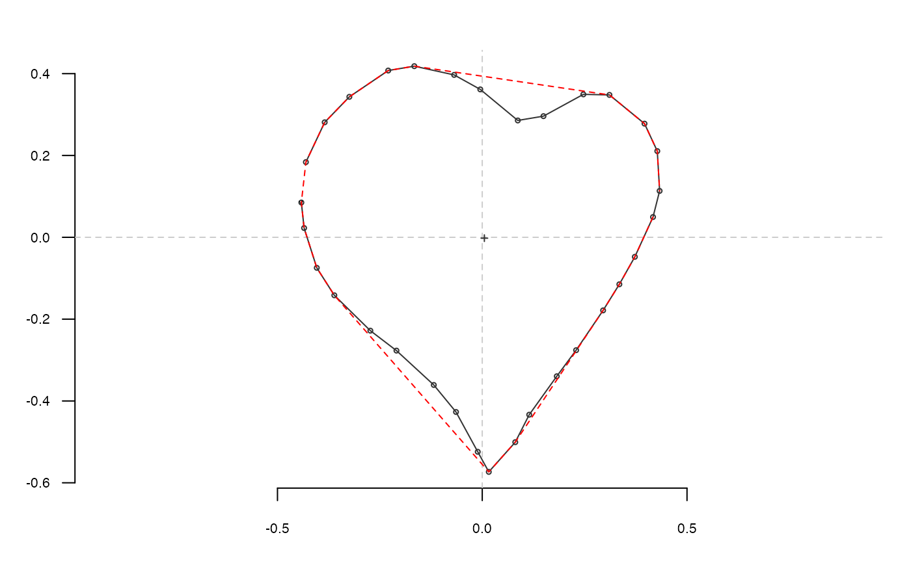
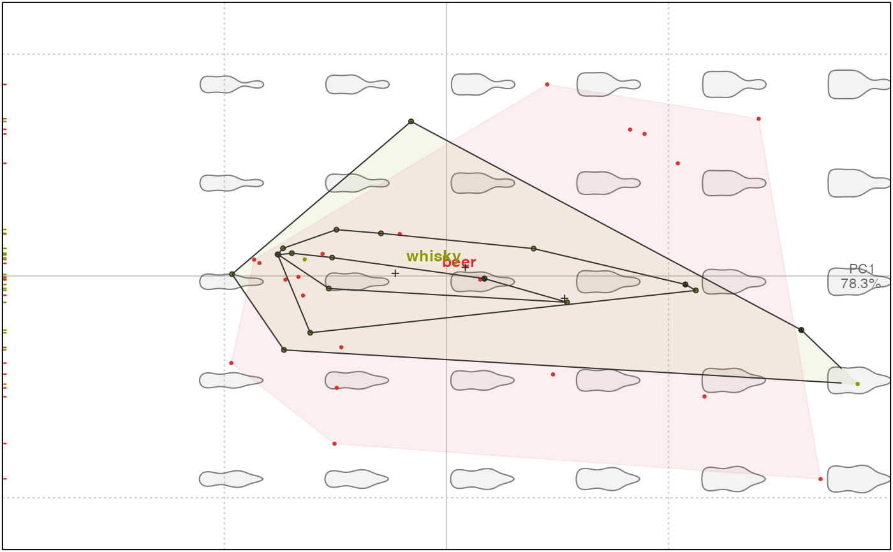
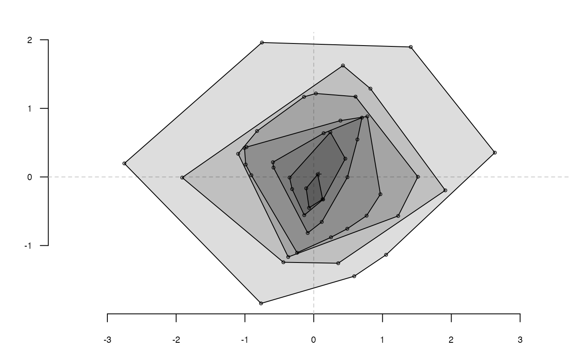

coo_chull returns the ids of points that define the convex hull of a shape. A simple wrapper
around chull, mainly used in graphical functions.
coo_chull(coo) # S3 method for default coo_chull(coo) # S3 method for Coo coo_chull(coo) coo_chull_onion(coo, close = TRUE) # S3 method for default coo_chull_onion(coo, close = TRUE) # S3 method for Coo coo_chull_onion(coo, close = TRUE)
| coo | a |
|---|---|
| close |
|
coo_chull returns a matrix of points defining
the convex hull of the shape; a list for Coo.
coo_chull_onion returns a list of successive onions rings,
and a list of lists for Coo.
coo_chull_onion recursively find their convex hull,
remove them, until less than 3 points are left.
Other coo_ descriptors: coo_angle_edge1,
coo_angle_edges,
coo_angle_tangent, coo_area,
coo_boundingbox,
coo_circularity,
coo_convexity,
coo_eccentricity,
coo_elongation, coo_length,
coo_lw, coo_rectangularity,
coo_rectilinearity,
coo_solidity, coo_width
ch <- coo_chull(h) lines(ch, col='red', lty=2)bot %>% coo_chull#> $brahma #> [,1] [,2] #> [1,] 316 124 #> [2,] 316 113 #> [3,] 315 92 #> [4,] 311 71 #> [5,] 307 60 #> [6,] 290 40 #> [7,] 269 27 #> [8,] 259 24 #> [9,] 238 18 #> [10,] 217 16 #> [11,] 196 15 #> [12,] 164 14 #> [13,] 143 15 #> [14,] 111 19 #> [15,] 90 25 #> [16,] 80 29 #> [17,] 59 45 #> [18,] 47 66 #> [19,] 44 77 #> [20,] 40 98 #> [21,] 33 624 #> [22,] 33 645 #> [23,] 34 656 #> [24,] 105 1082 #> [25,] 120 1098 #> [26,] 131 1100 #> [27,] 173 1102 #> [28,] 183 1102 #> [29,] 205 1101 #> [30,] 226 1096 #> [31,] 232 1087 #> [32,] 307 681 #> [33,] 310 660 #> [34,] 311 629 #> #> $caney #> [,1] [,2] #> [1,] 312 392 #> [2,] 310 130 #> [3,] 305 89 #> [4,] 297 69 #> [5,] 291 60 #> [6,] 281 52 #> [7,] 263 42 #> [8,] 243 35 #> [9,] 213 29 #> [10,] 184 26 #> [11,] 164 26 #> [12,] 134 29 #> [13,] 124 31 #> [14,] 113 34 #> [15,] 94 42 #> [16,] 84 47 #> [17,] 75 53 #> [18,] 60 72 #> [19,] 55 91 #> [20,] 51 122 #> [21,] 51 253 #> [22,] 53 535 #> [23,] 55 555 #> [24,] 122 992 #> [25,] 126 1001 #> [26,] 144 1015 #> [27,] 154 1018 #> [28,] 164 1020 #> [29,] 195 1020 #> [30,] 215 1017 #> [31,] 235 1009 #> [32,] 243 1000 #> [33,] 245 990 #> [34,] 311 553 #> [35,] 312 523 #> #> $chimay #> [,1] [,2] #> [1,] 291 171 #> [2,] 291 56 #> [3,] 288 40 #> [4,] 284 33 #> [5,] 276 29 #> [6,] 268 26 #> [7,] 254 22 #> [8,] 238 18 #> [9,] 231 17 #> [10,] 208 14 #> [11,] 184 11 #> [12,] 155 11 #> [13,] 117 14 #> [14,] 109 15 #> [15,] 94 17 #> [16,] 86 20 #> [17,] 73 26 #> [18,] 63 40 #> [19,] 60 48 #> [20,] 57 64 #> [21,] 56 71 #> [22,] 52 148 #> [23,] 49 241 #> [24,] 48 348 #> [25,] 49 356 #> [26,] 115 640 #> [27,] 117 647 #> [28,] 125 651 #> [29,] 140 654 #> [30,] 194 654 #> [31,] 202 651 #> [32,] 208 646 #> [33,] 213 631 #> [34,] 284 364 #> [35,] 286 348 #> [36,] 290 248 #> #> $corona #> [,1] [,2] #> [1,] 276 111 #> [2,] 275 70 #> [3,] 271 39 #> [4,] 265 32 #> [5,] 246 23 #> [6,] 235 21 #> [7,] 205 17 #> [8,] 154 16 #> [9,] 123 25 #> [10,] 102 36 #> [11,] 97 46 #> [12,] 96 57 #> [13,] 94 87 #> [14,] 91 167 #> [15,] 90 395 #> [16,] 91 426 #> [17,] 144 815 #> [18,] 164 822 #> [19,] 216 822 #> [20,] 225 807 #> [21,] 229 786 #> [22,] 276 431 #> [23,] 277 391 #> #> $deusventrue #> [,1] [,2] #> [1,] 323 349 #> [2,] 323 319 #> [3,] 321 281 #> [4,] 318 232 #> [5,] 315 184 #> [6,] 313 165 #> [7,] 305 97 #> [8,] 300 78 #> [9,] 296 70 #> [10,] 287 63 #> [11,] 267 56 #> [12,] 228 53 #> [13,] 170 53 #> [14,] 122 56 #> [15,] 94 59 #> [16,] 65 70 #> [17,] 55 78 #> [18,] 49 108 #> [19,] 41 204 #> [20,] 36 271 #> [21,] 36 349 #> [22,] 41 379 #> [23,] 132 912 #> [24,] 134 922 #> [25,] 142 929 #> [26,] 162 937 #> [27,] 172 939 #> [28,] 191 939 #> [29,] 211 932 #> [30,] 225 919 #> [31,] 228 909 #> [32,] 315 406 #> [33,] 318 387 #> #> $duvel #> [,1] [,2] #> [1,] 298 65 #> [2,] 297 54 #> [3,] 295 43 #> [4,] 290 32 #> [5,] 282 21 #> [6,] 271 17 #> [7,] 228 12 #> [8,] 206 11 #> [9,] 163 11 #> [10,] 141 12 #> [11,] 86 18 #> [12,] 76 22 #> [13,] 66 32 #> [14,] 61 43 #> [15,] 58 54 #> [16,] 58 76 #> [17,] 59 272 #> [18,] 61 315 #> [19,] 63 337 #> [20,] 65 348 #> [21,] 135 595 #> [22,] 140 605 #> [23,] 149 611 #> [24,] 160 616 #> [25,] 171 617 #> [26,] 182 617 #> [27,] 193 616 #> [28,] 204 613 #> [29,] 215 606 #> [30,] 223 596 #> [31,] 226 586 #> [32,] 292 347 #> [33,] 295 336 #> [34,] 296 326 #> [35,] 297 315 #> [36,] 298 293 #> #> $franziskaner #> [,1] [,2] #> [1,] 268 79 #> [2,] 267 68 #> [3,] 265 48 #> [4,] 262 37 #> [5,] 246 19 #> [6,] 236 15 #> [7,] 215 10 #> [8,] 205 8 #> [9,] 175 5 #> [10,] 154 5 #> [11,] 133 7 #> [12,] 104 12 #> [13,] 94 15 #> [14,] 73 23 #> [15,] 63 32 #> [16,] 56 53 #> [17,] 55 63 #> [18,] 54 83 #> [19,] 54 480 #> [20,] 60 532 #> [21,] 120 867 #> [22,] 140 869 #> [23,] 151 870 #> [24,] 171 870 #> [25,] 202 867 #> [26,] 265 512 #> [27,] 266 492 #> #> $grimbergen #> [,1] [,2] #> [1,] 292 190 #> [2,] 290 107 #> [3,] 289 96 #> [4,] 282 65 #> [5,] 278 54 #> [6,] 258 39 #> [7,] 247 35 #> [8,] 237 32 #> [9,] 205 27 #> [10,] 184 25 #> [11,] 164 25 #> [12,] 122 27 #> [13,] 90 33 #> [14,] 70 40 #> [15,] 59 49 #> [16,] 51 59 #> [17,] 45 80 #> [18,] 43 101 #> [19,] 42 122 #> [20,] 40 320 #> [21,] 40 394 #> [22,] 44 425 #> [23,] 110 771 #> [24,] 121 789 #> [25,] 131 790 #> [26,] 194 790 #> [27,] 204 789 #> [28,] 215 785 #> [29,] 288 431 #> [30,] 290 420 #> [31,] 291 389 #> [32,] 292 326 #> #> $guiness #> [,1] [,2] #> [1,] 295 61 #> [2,] 292 53 #> [3,] 287 45 #> [4,] 280 36 #> [5,] 272 30 #> [6,] 239 21 #> [7,] 231 19 #> [8,] 214 18 #> [9,] 190 17 #> [10,] 157 17 #> [11,] 140 19 #> [12,] 116 22 #> [13,] 99 27 #> [14,] 86 36 #> [15,] 79 43 #> [16,] 73 56 #> [17,] 70 73 #> [18,] 67 418 #> [19,] 138 743 #> [20,] 141 751 #> [21,] 149 756 #> [22,] 157 757 #> [23,] 182 759 #> [24,] 206 759 #> [25,] 214 757 #> [26,] 221 752 #> [27,] 225 746 #> [28,] 294 431 #> [29,] 297 415 #> [30,] 297 406 #> #> $hoegardeen #> [,1] [,2] #> [1,] 307 262 #> [2,] 307 111 #> [3,] 304 61 #> [4,] 298 50 #> [5,] 285 38 #> [6,] 274 32 #> [7,] 262 29 #> [8,] 211 23 #> [9,] 187 21 #> [10,] 174 21 #> [11,] 124 23 #> [12,] 111 26 #> [13,] 86 32 #> [14,] 74 35 #> [15,] 62 41 #> [16,] 56 52 #> [17,] 51 64 #> [18,] 48 75 #> [19,] 46 88 #> [20,] 44 113 #> [21,] 42 139 #> [22,] 40 265 #> [23,] 40 531 #> [24,] 108 1037 #> [25,] 110 1049 #> [26,] 118 1062 #> [27,] 131 1066 #> [28,] 143 1068 #> [29,] 156 1069 #> [30,] 194 1069 #> [31,] 207 1068 #> [32,] 220 1064 #> [33,] 229 1055 #> [34,] 233 1042 #> [35,] 235 1032 #> [36,] 304 540 #> [37,] 305 527 #> #> $jupiler #> [,1] [,2] #> [1,] 290 176 #> [2,] 289 135 #> [3,] 288 121 #> [4,] 286 107 #> [5,] 280 80 #> [6,] 271 66 #> [7,] 259 55 #> [8,] 245 47 #> [9,] 231 42 #> [10,] 218 39 #> [11,] 190 35 #> [12,] 177 34 #> [13,] 163 34 #> [14,] 136 37 #> [15,] 122 39 #> [16,] 108 42 #> [17,] 95 46 #> [18,] 81 52 #> [19,] 67 64 #> [20,] 58 77 #> [21,] 53 91 #> [22,] 51 105 #> [23,] 48 132 #> [24,] 47 146 #> [25,] 54 501 #> [26,] 55 515 #> [27,] 125 989 #> [28,] 131 1002 #> [29,] 145 1013 #> [30,] 159 1017 #> [31,] 172 1018 #> [32,] 186 1018 #> [33,] 200 1017 #> [34,] 213 1014 #> [35,] 227 1007 #> [36,] 236 994 #> [37,] 239 981 #> [38,] 294 518 #> [39,] 295 490 #> [40,] 295 395 #> #> $kingfisher #> [,1] [,2] #> [1,] 258 151 #> [2,] 258 141 #> [3,] 256 102 #> [4,] 255 83 #> [5,] 253 73 #> [6,] 249 55 #> [7,] 244 45 #> [8,] 235 35 #> [9,] 216 27 #> [10,] 206 24 #> [11,] 188 20 #> [12,] 169 18 #> [13,] 159 18 #> [14,] 140 20 #> [15,] 130 22 #> [16,] 112 27 #> [17,] 104 31 #> [18,] 94 37 #> [19,] 85 46 #> [20,] 81 56 #> [21,] 78 65 #> [22,] 76 75 #> [23,] 75 84 #> [24,] 73 103 #> [25,] 71 316 #> [26,] 71 384 #> [27,] 73 413 #> [28,] 123 729 #> [29,] 132 735 #> [30,] 142 736 #> [31,] 171 736 #> [32,] 181 735 #> [33,] 189 729 #> [34,] 192 719 #> [35,] 253 384 #> [36,] 255 365 #> #> $latrappe #> [,1] [,2] #> [1,] 326 53 #> [2,] 325 40 #> [3,] 324 28 #> [4,] 313 19 #> [5,] 288 15 #> [6,] 276 14 #> [7,] 251 12 #> [8,] 238 11 #> [9,] 76 11 #> [10,] 63 12 #> [11,] 51 14 #> [12,] 38 18 #> [13,] 30 27 #> [14,] 28 52 #> [15,] 27 89 #> [16,] 25 239 #> [17,] 25 451 #> [18,] 28 464 #> [19,] 111 724 #> [20,] 118 737 #> [21,] 130 745 #> [22,] 142 747 #> [23,] 167 748 #> [24,] 205 747 #> [25,] 217 744 #> [26,] 230 721 #> [27,] 234 710 #> [28,] 318 477 #> [29,] 321 465 #> [30,] 324 452 #> [31,] 325 440 #> [32,] 326 427 #> #> $lindemanskriek #> [,1] [,2] #> [1,] 275 67 #> [2,] 274 59 #> [3,] 271 50 #> [4,] 267 43 #> [5,] 256 30 #> [6,] 248 27 #> [7,] 239 24 #> [8,] 231 22 #> [9,] 214 18 #> [10,] 197 15 #> [11,] 189 14 #> [12,] 146 14 #> [13,] 129 16 #> [14,] 113 18 #> [15,] 96 22 #> [16,] 87 25 #> [17,] 79 29 #> [18,] 71 34 #> [19,] 60 49 #> [20,] 57 58 #> [21,] 55 66 #> [22,] 54 75 #> [23,] 53 362 #> [24,] 54 395 #> [25,] 55 404 #> [26,] 119 810 #> [27,] 123 827 #> [28,] 131 831 #> [29,] 147 834 #> [30,] 164 835 #> [31,] 172 835 #> [32,] 181 834 #> [33,] 189 832 #> [34,] 205 823 #> [35,] 207 814 #> [36,] 269 411 #> [37,] 270 403 #> [38,] 272 386 #> #> $nicechouffe #> [,1] [,2] #> [1,] 267 157 #> [2,] 267 64 #> [3,] 266 48 #> [4,] 262 40 #> [5,] 258 33 #> [6,] 250 28 #> [7,] 226 19 #> [8,] 217 17 #> [9,] 150 17 #> [10,] 116 18 #> [11,] 108 20 #> [12,] 100 23 #> [13,] 84 34 #> [14,] 80 41 #> [15,] 77 50 #> [16,] 75 58 #> [17,] 74 269 #> [18,] 75 311 #> [19,] 77 336 #> [20,] 135 683 #> [21,] 138 692 #> [22,] 153 702 #> [23,] 161 703 #> [24,] 170 703 #> [25,] 186 701 #> [26,] 194 698 #> [27,] 199 691 #> [28,] 205 665 #> [29,] 261 350 #> [30,] 263 334 #> [31,] 266 300 #> #> $pecheresse #> [,1] [,2] #> [1,] 290 355 #> [2,] 286 164 #> [3,] 280 87 #> [4,] 272 67 #> [5,] 256 52 #> [6,] 246 46 #> [7,] 226 40 #> [8,] 207 38 #> [9,] 187 36 #> [10,] 138 36 #> [11,] 109 41 #> [12,] 89 48 #> [13,] 81 53 #> [14,] 65 68 #> [15,] 58 86 #> [16,] 56 96 #> [17,] 54 116 #> [18,] 54 165 #> [19,] 56 310 #> [20,] 58 428 #> [21,] 61 476 #> [22,] 63 495 #> [23,] 124 940 #> [24,] 128 948 #> [25,] 143 960 #> [26,] 161 964 #> [27,] 191 964 #> [28,] 209 962 #> [29,] 219 959 #> [30,] 232 950 #> [31,] 237 933 #> [32,] 288 471 #> [33,] 290 451 #> #> $sierranevada #> [,1] [,2] #> [1,] 275 95 #> [2,] 275 83 #> [3,] 272 58 #> [4,] 268 46 #> [5,] 257 35 #> [6,] 245 31 #> [7,] 208 27 #> [8,] 196 26 #> [9,] 122 26 #> [10,] 109 27 #> [11,] 85 31 #> [12,] 72 37 #> [13,] 65 49 #> [14,] 63 61 #> [15,] 61 74 #> [16,] 59 382 #> [17,] 63 407 #> [18,] 118 658 #> [19,] 123 669 #> [20,] 133 677 #> [21,] 145 679 #> [22,] 157 680 #> [23,] 169 680 #> [24,] 182 679 #> [25,] 194 677 #> [26,] 206 669 #> [27,] 268 403 #> [28,] 270 391 #> [29,] 271 379 #> [30,] 272 366 #> #> $tanglefoot #> [,1] [,2] #> [1,] 298 64 #> [2,] 294 48 #> [3,] 291 40 #> [4,] 286 32 #> [5,] 62 32 #> [6,] 56 38 #> [7,] 50 54 #> [8,] 48 70 #> [9,] 47 383 #> [10,] 47 391 #> [11,] 48 407 #> [12,] 49 415 #> [13,] 130 704 #> [14,] 133 712 #> [15,] 213 712 #> [16,] 220 707 #> [17,] 295 425 #> [18,] 299 409 #> [19,] 301 393 #> #> $tauro #> [,1] [,2] #> [1,] 295 398 #> [2,] 290 132 #> [3,] 288 119 #> [4,] 282 84 #> [5,] 277 73 #> [6,] 266 60 #> [7,] 254 52 #> [8,] 232 41 #> [9,] 220 39 #> [10,] 184 34 #> [11,] 160 34 #> [12,] 123 39 #> [13,] 112 41 #> [14,] 100 44 #> [15,] 77 55 #> [16,] 67 65 #> [17,] 58 78 #> [18,] 54 90 #> [19,] 50 113 #> [20,] 48 125 #> [21,] 48 198 #> [22,] 52 405 #> [23,] 54 503 #> [24,] 59 538 #> [25,] 124 980 #> [26,] 132 1003 #> [27,] 144 1012 #> [28,] 156 1015 #> [29,] 168 1017 #> [30,] 180 1018 #> [31,] 192 1018 #> [32,] 204 1017 #> [33,] 215 1013 #> [34,] 228 1007 #> [35,] 236 995 #> [36,] 241 973 #> [37,] 293 532 #> [38,] 295 496 #> #> $westmalle #> [,1] [,2] #> [1,] 258 105 #> [2,] 257 80 #> [3,] 255 64 #> [4,] 252 41 #> [5,] 246 35 #> [6,] 232 25 #> [7,] 224 22 #> [8,] 207 16 #> [9,] 199 14 #> [10,] 182 12 #> [11,] 157 11 #> [12,] 149 11 #> [13,] 132 14 #> [14,] 123 16 #> [15,] 107 20 #> [16,] 98 24 #> [17,] 74 38 #> [18,] 70 45 #> [19,] 68 87 #> [20,] 67 145 #> [21,] 66 244 #> [22,] 66 344 #> [23,] 67 369 #> [24,] 70 394 #> [25,] 117 761 #> [26,] 127 773 #> [27,] 134 776 #> [28,] 151 779 #> [29,] 159 779 #> [30,] 182 776 #> [31,] 197 768 #> [32,] 201 760 #> [33,] 254 389 #> [34,] 256 372 #> [35,] 259 339 #> #> $amrut #> [,1] [,2] #> [1,] 269 74 #> [2,] 268 54 #> [3,] 264 34 #> [4,] 257 25 #> [5,] 248 20 #> [6,] 228 14 #> [7,] 198 11 #> [8,] 129 11 #> [9,] 99 14 #> [10,] 89 16 #> [11,] 79 19 #> [12,] 69 24 #> [13,] 60 32 #> [14,] 58 42 #> [15,] 55 62 #> [16,] 54 72 #> [17,] 54 82 #> [18,] 55 501 #> [19,] 56 511 #> [20,] 124 864 #> [21,] 134 871 #> [22,] 144 874 #> [23,] 154 875 #> [24,] 174 875 #> [25,] 184 874 #> [26,] 193 871 #> [27,] 200 864 #> [28,] 269 513 #> #> $ballantines #> [,1] [,2] #> [1,] 313 107 #> [2,] 313 67 #> [3,] 312 59 #> [4,] 309 44 #> [5,] 303 20 #> [6,] 298 12 #> [7,] 284 4 #> [8,] 268 3 #> [9,] 118 3 #> [10,] 95 4 #> [11,] 79 5 #> [12,] 71 6 #> [13,] 55 11 #> [14,] 49 19 #> [15,] 43 34 #> [16,] 41 42 #> [17,] 38 58 #> [18,] 35 82 #> [19,] 35 121 #> [20,] 36 483 #> [21,] 38 499 #> [22,] 41 507 #> [23,] 133 704 #> [24,] 141 708 #> [25,] 156 710 #> [26,] 188 710 #> [27,] 204 707 #> [28,] 208 701 #> [29,] 304 508 #> [30,] 307 500 #> [31,] 309 484 #> #> $bushmills #> [,1] [,2] #> [1,] 291 60 #> [2,] 290 45 #> [3,] 284 29 #> [4,] 269 18 #> [5,] 253 14 #> [6,] 238 13 #> [7,] 176 11 #> [8,] 130 11 #> [9,] 115 12 #> [10,] 100 15 #> [11,] 85 25 #> [12,] 77 40 #> [13,] 74 56 #> [14,] 72 71 #> [15,] 68 564 #> [16,] 68 656 #> [17,] 70 672 #> [18,] 132 881 #> [19,] 147 891 #> [20,] 162 893 #> [21,] 193 893 #> [22,] 208 891 #> [23,] 221 881 #> [24,] 290 676 #> [25,] 292 661 #> #> $chivas #> [,1] [,2] #> [1,] 332 316 #> [2,] 329 77 #> [3,] 327 69 #> [4,] 322 61 #> [5,] 305 53 #> [6,] 272 47 #> [7,] 240 45 #> [8,] 223 44 #> [9,] 198 43 #> [10,] 166 43 #> [11,] 133 44 #> [12,] 100 46 #> [13,] 83 48 #> [14,] 75 49 #> [15,] 50 55 #> [16,] 36 67 #> [17,] 34 75 #> [18,] 29 379 #> [19,] 29 412 #> [20,] 31 429 #> [21,] 33 437 #> [22,] 135 828 #> [23,] 142 833 #> [24,] 158 835 #> [25,] 183 836 #> [26,] 191 836 #> [27,] 216 834 #> [28,] 224 832 #> [29,] 232 816 #> [30,] 330 431 #> [31,] 332 423 #> [32,] 333 398 #> #> $dalmore #> [,1] [,2] #> [1,] 325 63 #> [2,] 323 50 #> [3,] 314 40 #> [4,] 302 36 #> [5,] 228 34 #> [6,] 49 34 #> [7,] 40 39 #> [8,] 33 50 #> [9,] 32 62 #> [10,] 42 334 #> [11,] 44 346 #> [12,] 47 359 #> [13,] 136 701 #> [14,] 149 706 #> [15,] 186 706 #> [16,] 198 705 #> [17,] 210 702 #> [18,] 310 347 #> [19,] 311 334 #> #> $famousgrouse #> [,1] [,2] #> [1,] 254 58 #> [2,] 254 39 #> [3,] 252 29 #> [4,] 247 21 #> [5,] 238 16 #> [6,] 229 14 #> [7,] 219 12 #> [8,] 210 11 #> [9,] 143 11 #> [10,] 124 13 #> [11,] 114 16 #> [12,] 106 19 #> [13,] 100 28 #> [14,] 97 36 #> [15,] 96 370 #> [16,] 96 389 #> [17,] 98 399 #> [18,] 146 611 #> [19,] 153 617 #> [20,] 172 619 #> [21,] 192 617 #> [22,] 198 610 #> [23,] 246 410 #> [24,] 250 391 #> #> $glendronach #> [,1] [,2] #> [1,] 275 90 #> [2,] 274 66 #> [3,] 273 54 #> [4,] 270 41 #> [5,] 260 32 #> [6,] 249 27 #> [7,] 237 24 #> [8,] 213 21 #> [9,] 189 19 #> [10,] 153 19 #> [11,] 129 21 #> [12,] 105 25 #> [13,] 92 29 #> [14,] 80 37 #> [15,] 76 49 #> [16,] 74 61 #> [17,] 72 85 #> [18,] 72 495 #> [19,] 74 507 #> [20,] 134 832 #> [21,] 145 839 #> [22,] 157 840 #> [23,] 170 841 #> [24,] 194 841 #> [25,] 206 836 #> [26,] 273 500 #> [27,] 274 488 #> #> $glenmorangie #> [,1] [,2] #> [1,] 298 76 #> [2,] 297 59 #> [3,] 284 44 #> [4,] 252 32 #> [5,] 236 29 #> [6,] 202 26 #> [7,] 187 25 #> [8,] 153 25 #> [9,] 136 26 #> [10,] 103 31 #> [11,] 86 36 #> [12,] 70 43 #> [13,] 57 55 #> [14,] 54 72 #> [15,] 53 518 #> [16,] 53 550 #> [17,] 54 567 #> [18,] 133 998 #> [19,] 142 1010 #> [20,] 159 1011 #> [21,] 176 1011 #> [22,] 192 1011 #> [23,] 209 1010 #> [24,] 222 1001 #> [25,] 298 574 #> [26,] 300 558 #> [27,] 300 524 #> #> $highlandpark #> [,1] [,2] #> [1,] 295 55 #> [2,] 293 41 #> [3,] 282 29 #> [4,] 268 26 #> [5,] 226 20 #> [6,] 170 16 #> [7,] 128 16 #> [8,] 86 21 #> [9,] 73 24 #> [10,] 59 29 #> [11,] 46 36 #> [12,] 40 50 #> [13,] 39 469 #> [14,] 40 483 #> [15,] 117 705 #> [16,] 128 716 #> [17,] 142 720 #> [18,] 170 722 #> [19,] 184 721 #> [20,] 198 719 #> [21,] 211 712 #> [22,] 291 487 #> [23,] 293 473 #> #> $jackdaniels #> [,1] [,2] #> [1,] 301 68 #> [2,] 295 42 #> [3,] 290 29 #> [4,] 280 20 #> [5,] 267 17 #> [6,] 100 17 #> [7,] 87 18 #> [8,] 75 25 #> [9,] 68 37 #> [10,] 65 51 #> [11,] 60 76 #> [12,] 60 89 #> [13,] 63 414 #> [14,] 64 453 #> [15,] 65 466 #> [16,] 70 493 #> [17,] 137 802 #> [18,] 150 810 #> [19,] 189 810 #> [20,] 215 807 #> [21,] 227 801 #> [22,] 296 480 #> [23,] 301 454 #> #> $jb #> [,1] [,2] #> [1,] 305 102 #> [2,] 305 81 #> [3,] 303 70 #> [4,] 295 49 #> [5,] 285 41 #> [6,] 274 35 #> [7,] 264 31 #> [8,] 242 29 #> [9,] 106 29 #> [10,] 85 31 #> [11,] 74 35 #> [12,] 63 40 #> [13,] 54 47 #> [14,] 44 69 #> [15,] 43 80 #> [16,] 40 595 #> [17,] 44 617 #> [18,] 123 1030 #> [19,] 131 1036 #> [20,] 163 1037 #> [21,] 195 1037 #> [22,] 217 1036 #> [23,] 221 1027 #> [24,] 300 608 #> [25,] 302 597 #> #> $johnniewalker #> [,1] [,2] #> [1,] 218 24 #> [2,] 218 20 #> [3,] 217 12 #> [4,] 214 8 #> [5,] 206 7 #> [6,] 178 6 #> [7,] 146 5 #> [8,] 142 6 #> [9,] 138 8 #> [10,] 134 15 #> [11,] 132 211 #> [12,] 132 239 #> [13,] 154 337 #> [14,] 158 342 #> [15,] 162 343 #> [16,] 174 343 #> [17,] 186 342 #> [18,] 188 339 #> [19,] 215 240 #> [20,] 217 232 #> #> $magallan #> [,1] [,2] #> [1,] 241 57 #> [2,] 238 49 #> [3,] 227 35 #> [4,] 220 32 #> [5,] 205 26 #> [6,] 192 23 #> [7,] 170 20 #> [8,] 155 20 #> [9,] 120 29 #> [10,] 114 32 #> [11,] 99 42 #> [12,] 95 49 #> [13,] 93 64 #> [14,] 75 441 #> [15,] 75 484 #> [16,] 77 499 #> [17,] 79 513 #> [18,] 140 766 #> [19,] 150 778 #> [20,] 164 779 #> [21,] 171 779 #> [22,] 185 776 #> [23,] 194 764 #> [24,] 254 516 #> [25,] 258 494 #> [26,] 258 450 #> [27,] 257 414 #> #> $makersmark #> [,1] [,2] #> [1,] 328 144 #> [2,] 323 103 #> [3,] 321 88 #> [4,] 318 75 #> [5,] 314 60 #> [6,] 299 18 #> [7,] 285 10 #> [8,] 271 7 #> [9,] 228 5 #> [10,] 82 5 #> [11,] 67 7 #> [12,] 53 17 #> [13,] 33 71 #> [14,] 30 85 #> [15,] 25 127 #> [16,] 13 267 #> [17,] 11 296 #> [18,] 8 353 #> [19,] 8 367 #> [20,] 10 381 #> [21,] 16 408 #> [22,] 126 840 #> [23,] 134 851 #> [24,] 149 856 #> [25,] 207 856 #> [26,] 221 852 #> [27,] 228 842 #> [28,] 343 386 #> [29,] 345 358 #> [30,] 345 343 #> [31,] 343 315 #> #> $oban #> [,1] [,2] #> [1,] 275 74 #> [2,] 270 57 #> [3,] 262 50 #> [4,] 254 47 #> [5,] 245 44 #> [6,] 228 41 #> [7,] 220 40 #> [8,] 203 38 #> [9,] 185 37 #> [10,] 160 37 #> [11,] 134 39 #> [12,] 126 40 #> [13,] 117 42 #> [14,] 100 46 #> [15,] 92 49 #> [16,] 83 56 #> [17,] 77 73 #> [18,] 72 517 #> [19,] 74 534 #> [20,] 75 542 #> [21,] 138 879 #> [22,] 146 894 #> [23,] 154 897 #> [24,] 171 899 #> [25,] 188 898 #> [26,] 197 897 #> [27,] 205 895 #> [28,] 213 888 #> [29,] 279 535 #> [30,] 280 526 #> [31,] 280 500 #> #> $oldpotrero #> [,1] [,2] #> [1,] 271 93 #> [2,] 269 41 #> [3,] 266 32 #> [4,] 259 26 #> [5,] 250 21 #> [6,] 233 15 #> [7,] 224 12 #> [8,] 207 8 #> [9,] 191 7 #> [10,] 165 7 #> [11,] 148 8 #> [12,] 122 11 #> [13,] 105 13 #> [14,] 88 18 #> [15,] 79 22 #> [16,] 66 33 #> [17,] 63 41 #> [18,] 62 50 #> [19,] 58 205 #> [20,] 57 248 #> [21,] 58 256 #> [22,] 130 588 #> [23,] 139 601 #> [24,] 156 603 #> [25,] 182 603 #> [26,] 191 602 #> [27,] 198 596 #> [28,] 273 256 #> [29,] 273 204 #> #> $redbreast #> [,1] [,2] #> [1,] 255 78 #> [2,] 254 27 #> [3,] 253 22 #> [4,] 245 15 #> [5,] 240 13 #> [6,] 231 11 #> [7,] 217 9 #> [8,] 207 8 #> [9,] 189 7 #> [10,] 160 7 #> [11,] 146 8 #> [12,] 137 9 #> [13,] 123 11 #> [14,] 118 12 #> [15,] 114 13 #> [16,] 109 15 #> [17,] 104 18 #> [18,] 101 27 #> [19,] 100 50 #> [20,] 98 107 #> [21,] 97 163 #> [22,] 97 205 #> [23,] 98 214 #> [24,] 154 428 #> [25,] 158 431 #> [26,] 163 432 #> [27,] 172 433 #> [28,] 181 433 #> [29,] 191 432 #> [30,] 199 427 #> [31,] 255 214 #> [32,] 256 172 #> #> $tamdhu #> [,1] [,2] #> [1,] 304 106 #> [2,] 302 94 #> [3,] 299 83 #> [4,] 289 71 #> [5,] 278 64 #> [6,] 253 54 #> [7,] 229 51 #> [8,] 205 49 #> [9,] 155 49 #> [10,] 120 51 #> [11,] 108 52 #> [12,] 84 60 #> [13,] 73 64 #> [14,] 60 72 #> [15,] 52 84 #> [16,] 49 96 #> [17,] 44 613 #> [18,] 47 638 #> [19,] 49 650 #> [20,] 116 1038 #> [21,] 122 1050 #> [22,] 134 1054 #> [23,] 158 1057 #> [24,] 183 1057 #> [25,] 207 1055 #> [26,] 218 1049 #> [27,] 221 1037 #> [28,] 301 638 #> [29,] 302 625 #> #> $wildturkey #> [,1] [,2] #> [1,] 333 76 #> [2,] 333 63 #> [3,] 327 49 #> [4,] 316 38 #> [5,] 301 34 #> [6,] 275 28 #> [7,] 262 26 #> [8,] 220 23 #> [9,] 122 23 #> [10,] 81 26 #> [11,] 55 30 #> [12,] 41 34 #> [13,] 28 40 #> [14,] 18 52 #> [15,] 15 66 #> [16,] 15 625 #> [17,] 20 651 #> [18,] 120 1113 #> [19,] 134 1118 #> [20,] 147 1120 #> [21,] 203 1120 #> [22,] 216 1117 #> [23,] 224 1106 #> [24,] 326 648 #> [25,] 330 620 #> #> $yoichi #> [,1] [,2] #> [1,] 290 48 #> [2,] 280 35 #> [3,] 273 32 #> [4,] 258 29 #> [5,] 244 28 #> [6,] 229 27 #> [7,] 200 26 #> [8,] 156 26 #> [9,] 134 27 #> [10,] 104 29 #> [11,] 90 32 #> [12,] 75 40 #> [13,] 70 54 #> [14,] 69 120 #> [15,] 68 421 #> [16,] 68 472 #> [17,] 69 487 #> [18,] 72 501 #> [19,] 136 721 #> [20,] 144 735 #> [21,] 159 738 #> [22,] 203 738 #> [23,] 210 737 #> [24,] 225 730 #> [25,] 291 496 #> [26,] 293 481 #> [27,] 294 466 #> [28,] 294 437 #>coo_chull_onion#> function(coo, close=TRUE){ #> UseMethod("coo_chull_onion") #> } #> <environment: namespace:Momocs>#>all_whisky_points <- x %>% as_df() %>% filter(type=="whisky") %>% select(PC1, PC2) plot(x, ~type, eig=FALSE)peeling_the_whisky_onion <- all_whisky_points %>% as.matrix %>% coo_chull_onion() # you may need to par(xpd=NA) to ensure all segments # even those outside the graphical window are drawn peeling_the_whisky_onion$coo %>% lapply(coo_draw)#> [[1]] #> NULL #> #> [[2]] #> NULL #> #> [[3]] #> NULL #>xy %>% coo_chull_onion() %$% coo %>% lapply(polygon, col="#00000022")#> [[1]] #> NULL #> #> [[2]] #> NULL #> #> [[3]] #> NULL #> #> [[4]] #> NULL #> #> [[5]] #> NULL #> #> [[6]] #> NULL #> #> [[7]] #> NULL #>